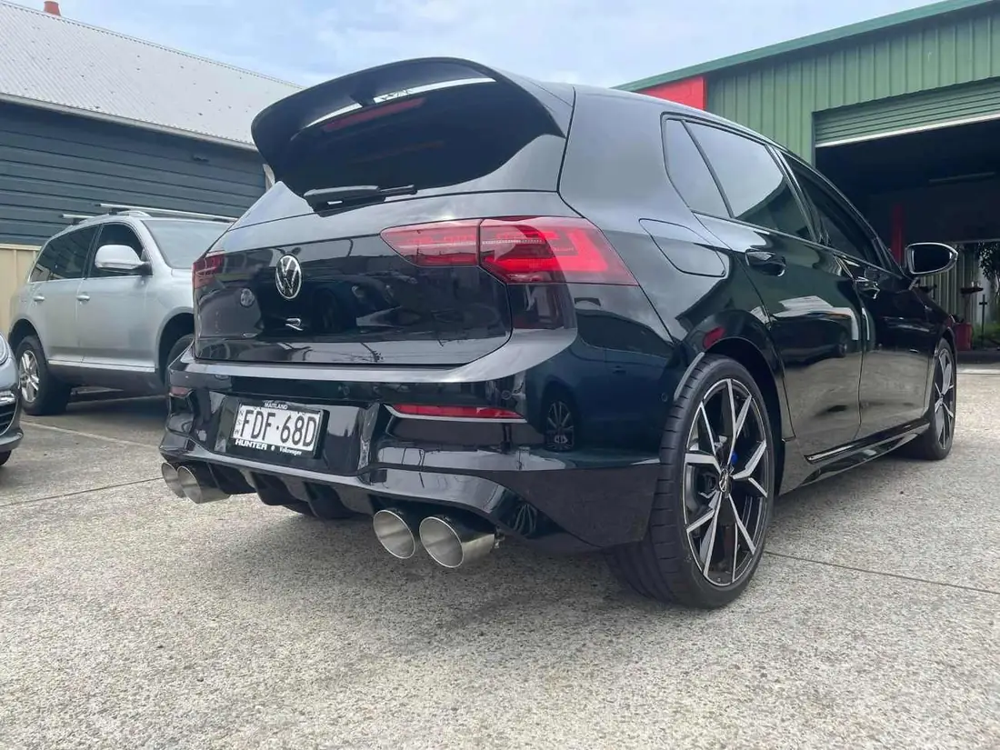

Tuning bypeople whoservice it
APR, RacingLine and Unitronics upgrades for VW Group cars — chosen, fitted and set up by the workshop that knows your car’s history.

Software
ECU and DSG software from APR, RacingLine and Unitronics — more power and sharper response, matched to the hardware already on the car.
Before anything is flashed we check the car is healthy: fault codes, service history and the parts that take the extra load. Ask us which stage suits your car and how you drive.
- APR
- RacingLine
- Unitronics
- ECU
- DSG / TCU

Brakes
More power needs more stopping. Big brake kits, performance pads and rotors fitted and bedded in properly.
- Big brake kits
- Pads & rotors
- Brake fluid

Suspension
Coilovers and suspension upgrades set up for Newcastle roads, not just for looks.
- Coilovers
- Springs
- Bushes

Exhaust & intake
Exhaust systems, intakes and supporting mods fitted cleanly, with the sound and fit checked before the car goes home.
- Exhausts
- Intakes
- Supporting mods